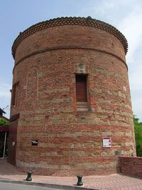
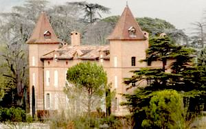
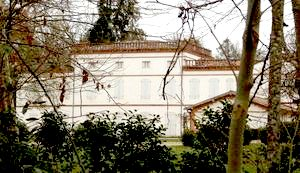
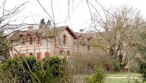
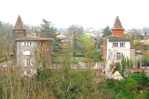
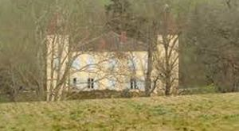
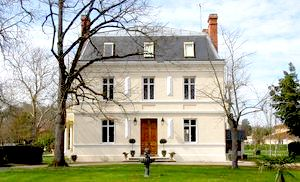
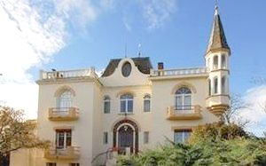
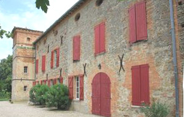

Recensement Jean-Claude Truffet
| Département | 81 — Tarn |
| Canton | Lavaur |
| Commune | Lavaur |
| Type d'édifice | Château |
| Période d'origine | XVII |









plusieurs châteaux à Lavaur celui de Bellevue (voir article) de Mirabel du XVIIe siècle, de Reyniès du XVIIe siècle, de Tyr du XIXe siècle, de Poudéous du XIXe siècle (voir article) et la villa de Castel Florit, au style éclectique qui mélange plusieurs influences historiques, a été construite vers 1910, de Couffinal (voir article suivant), de Roquenaud, de Soules,de Reynies, de St-Sauveur, de Lacamp et bien d'autres qui sont des gîtes dont je n'ai pas d'information. LAVAUR, le Plô, site du château de Lavaur aujourd'hui disparu, racheté au roi par les consuls en 1622, est aménagé en promenade publique puis en esplanade dès le XVIIe siècle. La Tour des Rondes. L'un des derniers vestiges des fortifications de la vieille ville. Plusieurs châteaux aux environs de Lavaur. MIRABEL-LAVAL, Pierre Devoisins continua la campagne de travaux amorcée au XVIIe siècle, et devient capitoul en 1749. : une maison est construite au lieu-dit "Baillet". On sait que le 15 juillet 1709, Pierre Devoisins, bourgeois de Lavaur et avocat au parlement, acheta à Pierre Candeilh la maison de Vaylet, ou Laval. Pierre Devoisins continua la campagne de travaux amorcée au XVIIe siècle, et devint capitoul en 1749. En 1826. Il appartenait aux héritiers de Guillaume Devoisins de Mirabel. ROQUENAUD, un château est construit au lieu-dit "Saint-Eugène" . Il appartenait à Louis Bermond, de Gaillac. SOULES du XVIIIe siècle, au milieu XIXe siècle, il appartenait à Jean-Baptiste Lacoste-Bagnères. Françoise Rose Laurence dite Rosine Bermond 1808 mariée le 19 mars 1831 avec Antoine Maximin de Vialar 1809 restera dans cette famille jusqu'en 1901. Marie-Antoinette de Vialar mariée avec Guillaume Tiersde Bar-Brusley 1825-1901 dont : Emmanuel Tiers de Bar-Brusley 1856-1935, toujours dans la descendance.
Mirabel , construit sur un plan en quadrilatère délimitant une cour fermée. Les angles sont marqués par deux tours octogonales saillantes. Le corps de logis comprend un bâtiment et deux ailes en retour d'équerre. La façade sur terrasse est flanquée de deux tours pavillons en légère saillie. Les ailes sont poursuivies par des dépendances qui ferment le quadrilatère. Celles-ci comprennent l'ancienne cuisine, la chapelle, l'orangerie, les écuries et les remises. Trois portails ont un passage sous arcade surmonté de frontons en accolade, avec corniche sommée de pots à fruits en terre cuite. Roquenaud, où il apparaît sous la forme d'un plan en U flanqué de pavillons moins élevés. Sa toiture est caché par une galerie à l'italienne qui lui confère un air néo classique, bien que sans caractère particulier, le château a été édifié à l'extrême fin du XVIIIe siècle ou au début du siècle suivant. a été ensuite amputé de son aile nord-est. Les vastes communs ont été édifiés à la fin du XIXe siècle. Roquenaud comprend également de vastes communs construits à la fin du XIXe siècle et est au centre d'un parc à l'anglaise dessiné aux alentours de 1870. En revanche, le pigeonnier est antérieur. Château de plan rectangulaire, façade principale ordonnancée à sept travées, toit à longs pans couvert de tuiles creuses, Soules de plan quadrilatère à deux niveaux toit en croupes flanqué de tour carrées en angles.
Famille de Pierre Devoisins Famille de Régnier Famille de Taffanel de La Jonquière
"
Latour de Lavaur vestiges, le château de Mirabel, de Couffinal, de Roquenaud, de Soules